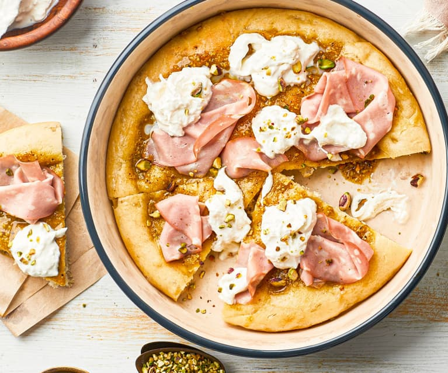

Glavna karakteristika kuhinje Taverna je njen zdravi balans, odlični osnovni sastojci koji su pažljivo pripremljeni i koji zadržavaju originalni kvalitet i svežinu.
Jela italijanske kuhinje obično sadrže kombinaciju od tri do četiri sastojaka, komponovanih u savršenu harmoniju ukusa.
Autentična hrana, raznovrsna u ukusima i inventivna u načinu pripremanja, daje za rezultat oduševljenje čak i kod najzahtevnijih gurmana
N A Š A P R E P O R U K A:
Uživajte u svakom zalogaju

P I Z Z A | B R E S A L O AP A S T A | M I N A S T R O N E
T I M
Iskustvo i privrženost
MARKO MARKOVIĆ
Više od 25 godina iskustva u prestonicama gastronomije Italiji i Francuskoj, kao Šef kuhinje, menadžer i vlasnik restorana, školovanja i usavršavanja od škole Le Notre, Alme, Visoke Hotelijerske škole i Fakulteta Hotelijerstva, šef Marko radosno deli i prenosi svoja iskustva u želji da svi postanemo gastronomski bogatiji i osetimo emocije koje priroda pruža na tanjiru.
TIM TAVERNA
Tim kuvara, pizza majstora, poslastičara restorana La Cucina, predstavlja sklop profesionalnog iskustva, koji svoju strast i ljubav prema svom poslu prenose na svaki zalogaj. Sveže testenine i pizze koje se proizvode svakodnevno u našoj kuhinji, sladoled i sorbeti predstavljaju pravi povod da nas posetite i uverite se u njihov kvalitet i originalnost.